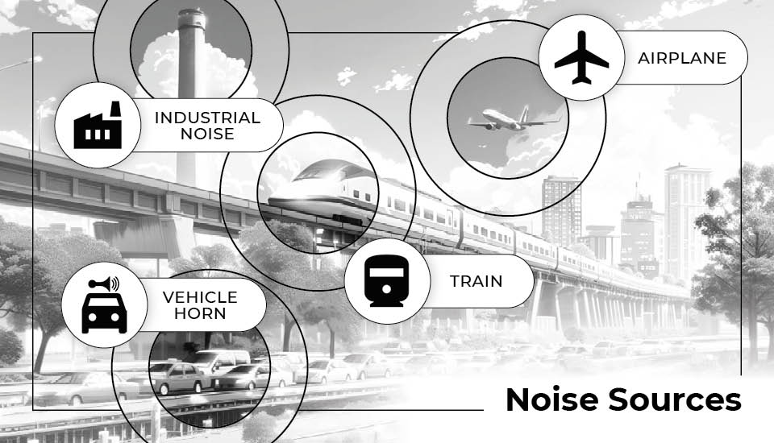
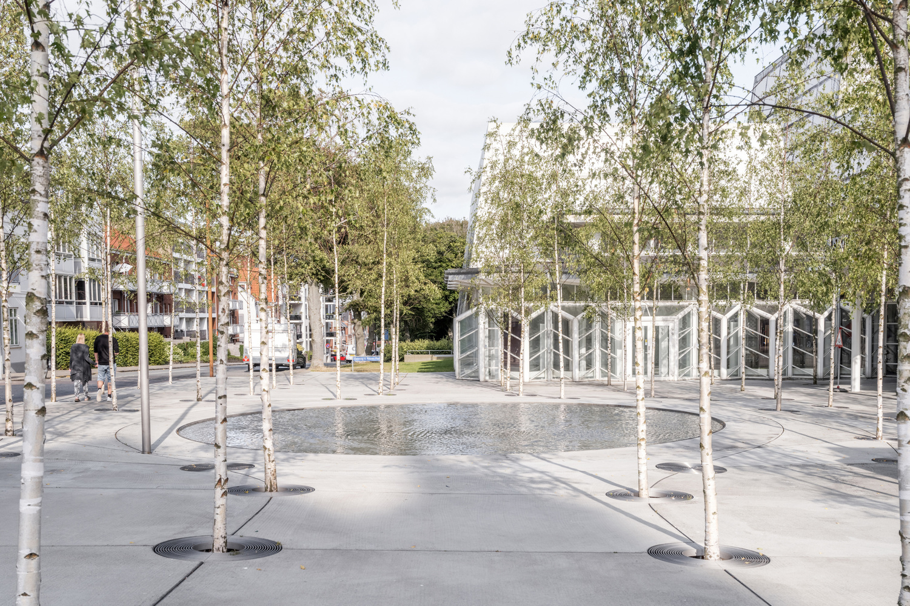

Page 1: Planting Street Trees
Planting tall trees along city streets helps scatter sound waves. Leaves and branches disrupt the straight path of traffic noise before it reaches front doors.
Acoustic management means controlling loud sounds in towns and cities. Using tools like walls, trees, and design rules keep communities quiet and healthy.
Looking for loud sounds from cars, trucks, and factories.
Building barriers and plant trees to block the sound.

Different kinds of city noise require different solutions. Click the info buttons below to see how cities manage each source.
Cars, trucks, and motorbikes create continuous background noise on busy roads and highways.
Heavy machinery, drilling, and building tools create loud, temporary spikes in local noise levels.
Factories, processing plants, and power stations generate low, vibrating machinery sounds.
While municipal planning establishes quiet zones, individual cooperation ensures these public spaces remain effective and peaceful for the community.
Lower vehicle audio volume and suppress unnecessary horn usage when driving through marked hospital and school zones.
Use headphones rather than external speakers when spending time in designated quiet parks or open green spaces.
Avoid operating loud power tools or domestic machinery near public quiet areas during early morning or late evening hours.
Municipalities utilize specific structural criteria to ensure quiet zones successfully lower ambient decibel levels across public areas.
Planting green spaces is a proven way for neighborhoods to lower local street sounds. This guide shows how natural barriers block everyday city sounds.
Planting tall trees along city streets helps scatter sound waves. Leaves and branches disrupt the straight path of traffic noise before it reaches front doors.
A thick row of bushes and trees can lower local traffic noise by 5 to 10 decibels. For the best results, residents should plant a mix of evergreen shrubs that stay thick all year long to absorb sound waves.
Open soil, lawns, and ground cover plants absorb sound waves instead of bouncing them back. Replacing hard concrete paths with green turf lowers neighborhood echo.
Creating shared neighborhood gardens near busy intersections creates a protective buffer. These large green spaces help block loud traffic zones from quiet housing areas.

Click the pages below to read about other simple ways to lower street sounds and create quiet spaces in your neighborhood.